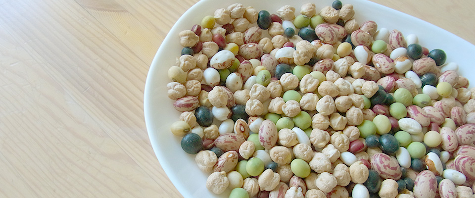
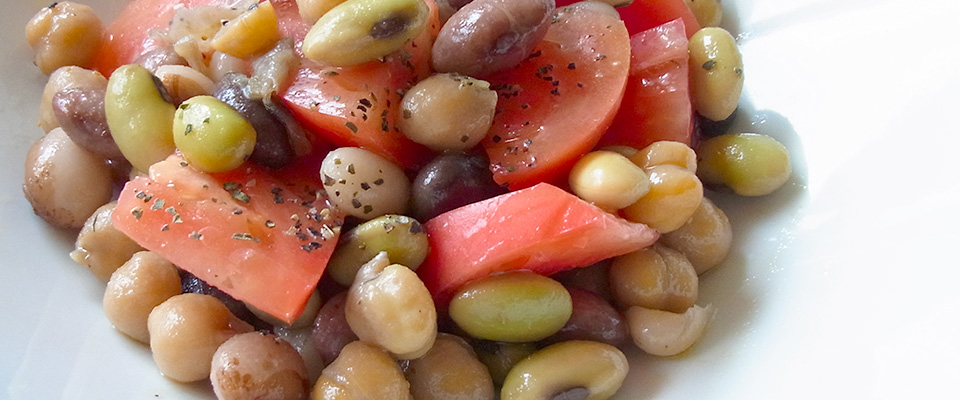
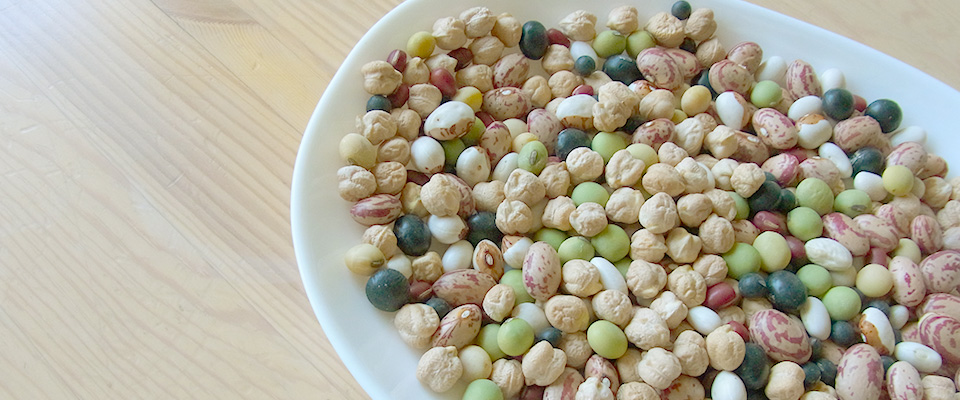
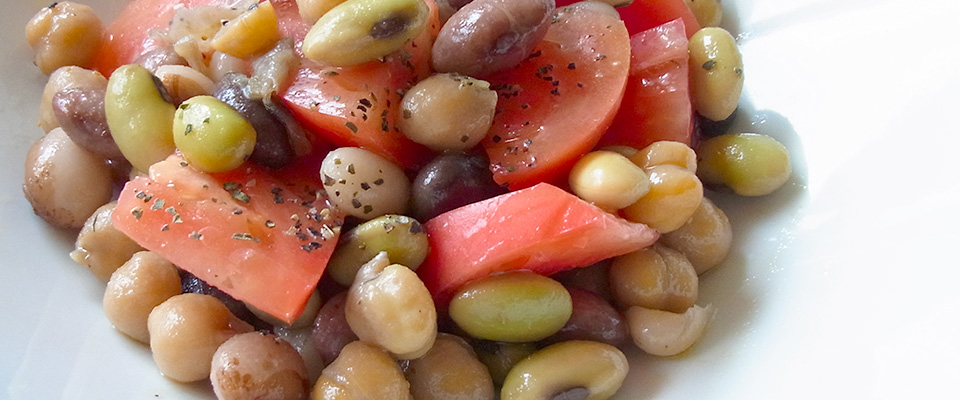

豆な知識
日本人に馴染みの深い食材豆。味噌・醤油・納豆・豆腐など豆を原料とした加工品はたくさんあります。日本の食卓にかかせない白米は体内では合成されず、必ず食物から補給しなければならない必須アミノ酸が不足しています。これを補ってくれるのが豆です！豆ごはんや豆のおかずは美味しいだけではなく栄養学的にも理にかなっているのです。昔から食べられてきた先人の知恵ですね。そんな豆知識をご紹介。
豆がいっぱい！
豆王国十勝。小豆・金時・花豆など北海道の豆の生産量は全国の7割以上、その中でも十勝は北海道の5割以上を占めています。十勝の直売所をみたら豆の種類の多さに驚くと思います。このサイトでは十勝の定番の豆から世界の豆、珍しい豆などを厳選しました。
豆といっしょ！
十勝の農業は豆からはじまりました。一般の家の庭でさえ豆を作っている人が多く毎年様々な豆のおすそわけが我が家にやってきます。乾燥豆で料理はなんだか面倒と思われている方もいるかもしれませんが一度作ってみると本当に簡単です。小さな体に大きな力を秘めた豆からパワーをいただきましょう！
十勝豆知識
by 程琦